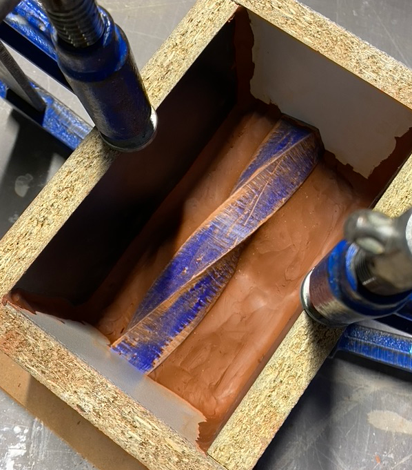
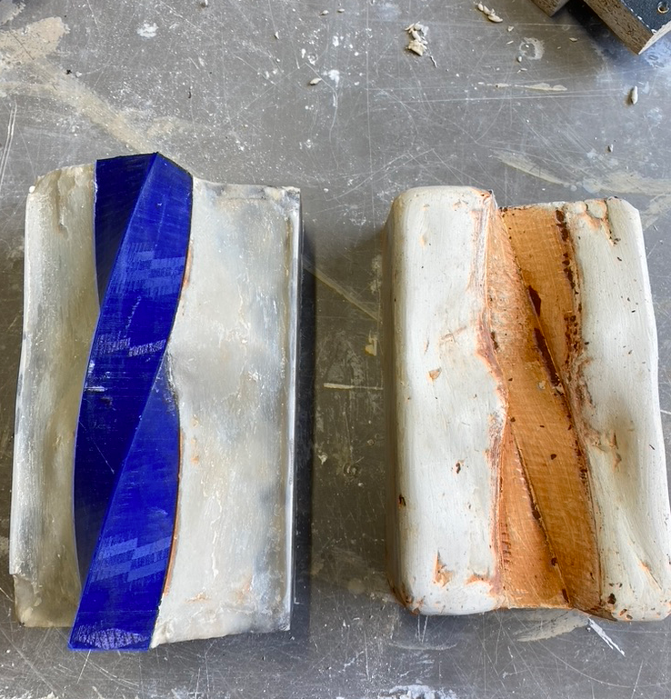
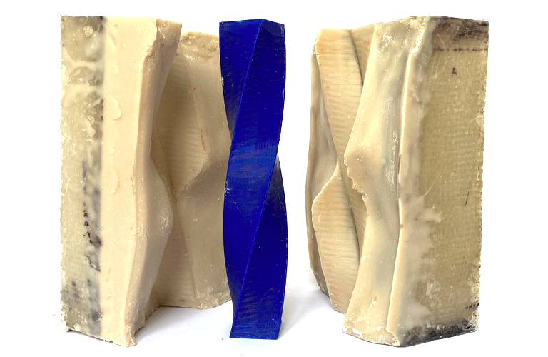
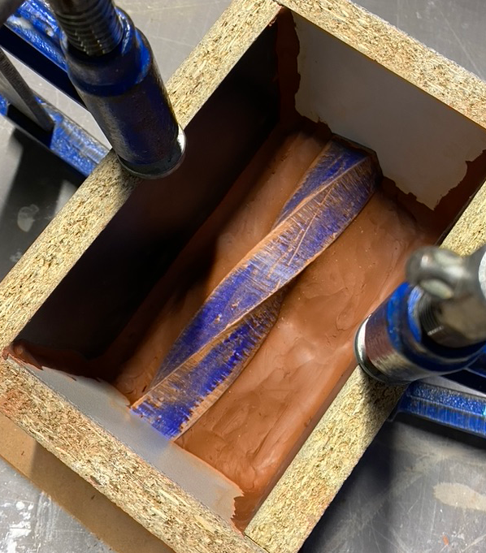
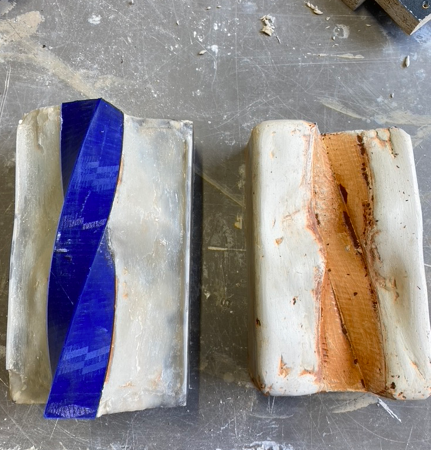
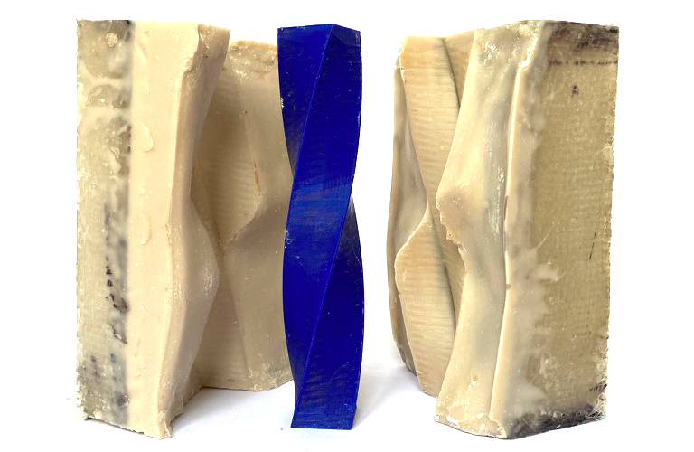

Ce projet consiste à repenser et remettre en question des processus de fabrication de façons plus naturelles avec moins d'interventions humaines.
La pousse d'élément naturelle m'intriguant beaucoup, je decide d'utilier ce processus de la nature pour produire des pièces.
En quelques mots, je veux faire pousser des pièces sur des arbres.
 




